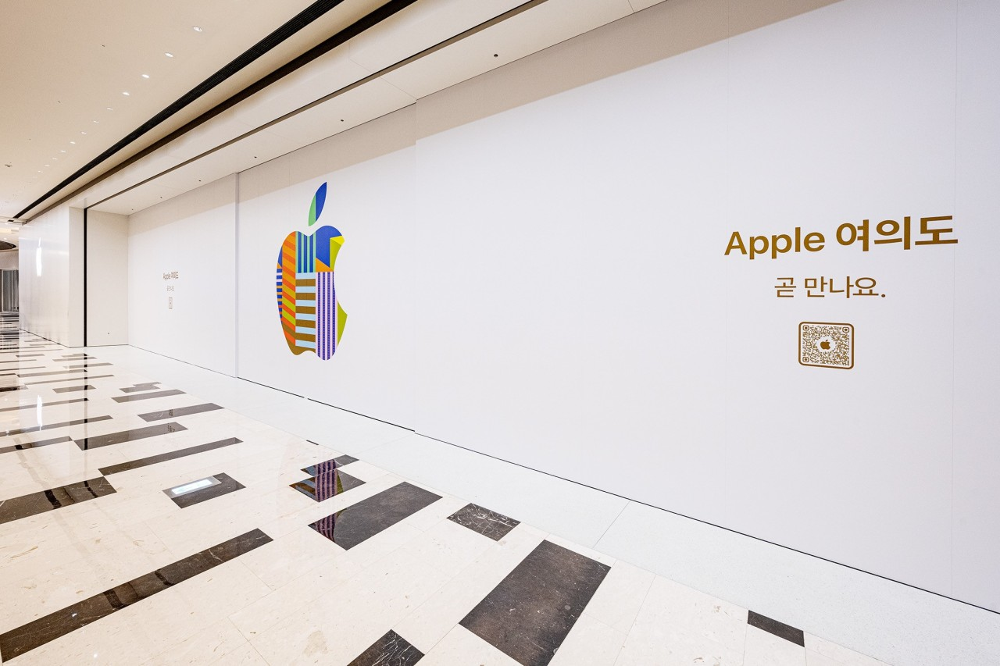
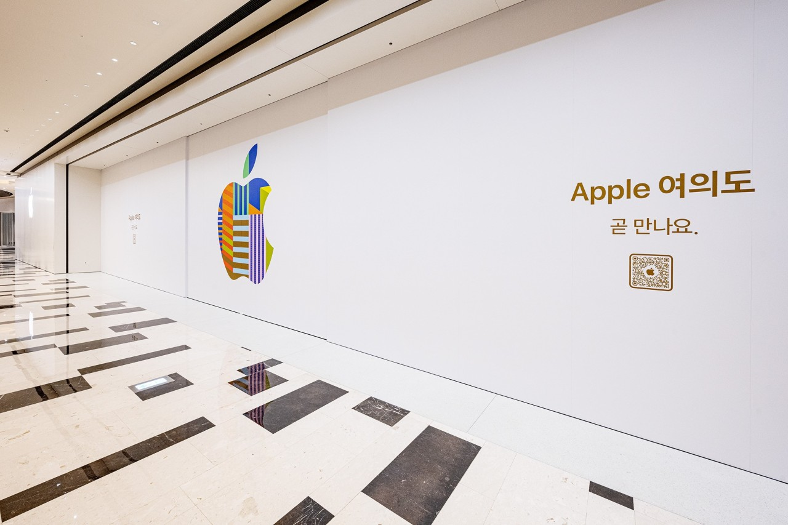

- Summarize
- History
- Stock
- Apple Korea
Apple Korea
In the late 2010s, more sites comply with web standards in Korea, and in particular, problems such as public certificates and Hangul files, which were classified as accumulated evils of the Korean Internet, were solved by financial certificates and Hancom Space, enabling year-end settlement only with iPhone by 2020. As a result, the domestic Apple user base using iPhone, iPad, and Mac is gradually expanding. However, in early 2010, as in the rest of the countries except the United States and some countries, the Mac share of general users in Korea was not high, and everything was based on the window environment, so most of them were really limited (design, computer, etc.).
 
